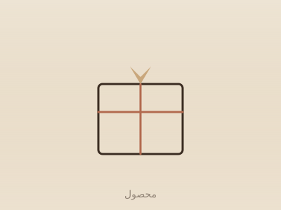

فروشگاه خُردو
اشیایی که روح بافت قدیم مشهد را در خود دارند — از زیورآلات فرشمحور تا یادگاریهای میل زورخانه. روی هر محصول بزنید تا رنگبندی، تعداد موجود و مشخصات کامل را ببینید.

صنایعدستی
جعبهای دستساز با نقوش هندسی الهامگرفته از کاشیکاری بافت قدیم مشهد.
پارچه و نساجی
شال نخی با نقش لچکترنج و رنگبندی نود و فیروزهایِ حرم.
یادگاری
سه شمع در ظروف سرامیکی دستساز با نقش حوضخانه خانه داروغه.
 خُردو
خُردو